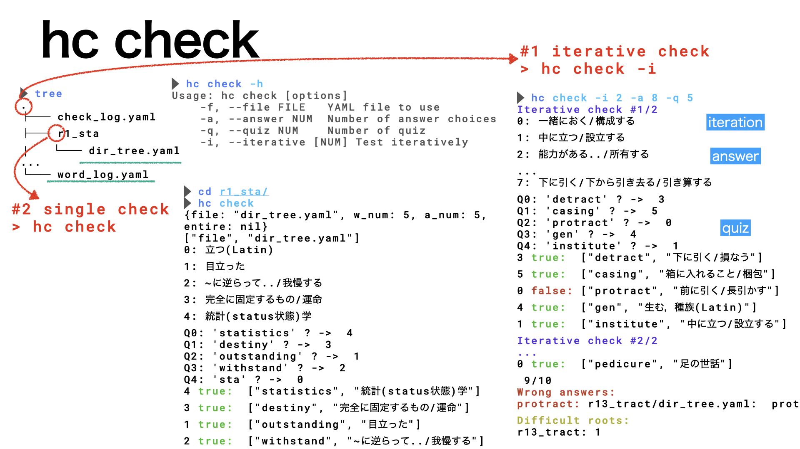
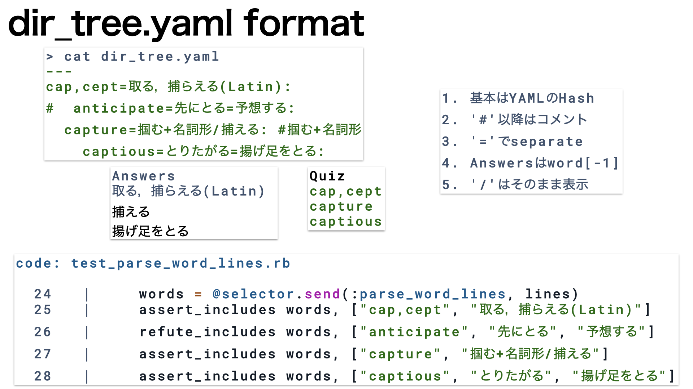
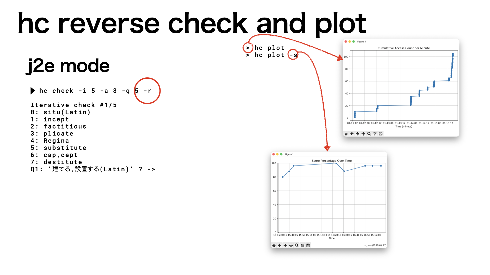

hc checkの使い方
Table of Contents
1. name
- hc checkは英単語のetymological(語源に基づく) buildingを行うclaです．
- 単語帳のcli版です．
- dir_tree.yamlを編集しながら 自分の記憶に残る英単語学習を目指しています．
2. install
> sudo gem install mk_semi_lattice # install mk_sl and hc > hc check --install # install etymological builder yamls > cd _stack_init_check_dirs
3. usage
|  |
| Fig.1 hc checkの動作の概略図. |
3.1. hc check
mk_semi_latticeをgemでinstallすると， hc(hyper cardの略)も同時にinstallされます．
> hc check -h
を使って単語の習得checkを行います．
3.2. tree構造
展開された_stack_init_check_dirsはtreeで確認できます．
3.3. iterative check(#1)
_stack_init_check_dirs上で
> hc check -i 5 -a 8 -q 5
とすると iteration=5, answer=8, quiz=5で 繰り返し(iterative) checkが走ります．
3.4. single check(#2)
間違いの多かったdirに移動(cd)してチェックを
> cd r1_sta > hc check
走らせると，r1_sta/dir_tree.yamlを参照して 単一(single)のcheckが走ります．
4. help
> hc abbrev -h
Usage: hc check [options]
-f, --file FILE YAML file to use
-a, --answer NUM # not implemented
-q, --quiz NUM Number of quiz(def 5)
-i, --iterative [NUM] Test iteratively (num=2)
--install Install sample abbrev data
5. dir_tree.yaml編集
|  |
| Fig.2 dir_tree.yamlのフォーマット. |
Answers-Quizはdir_tree.yamlから取り出しています． 自分の進捗に合わせて編集していってください． 消してしまわずに'#'でコメントアウトするのが正しいやり方．
さらに，
> hc stack
でバックアップをとって変えていくのがコツです． stackの解説を参照ください．
6. reverse and plot
|  |
| Fig.3 日本語から英単語(j2e)のチェックとplot. |
発展形です．reverseを指定すると日本語から英単語(j2e)ができます． また
> hc plot > hc plot -s
すると練習時間の履歴や点数(score)が表示されます．
7. references
「由来とつながりがわかる英単語語源マップ」, 臼井俊雄著, (ベレ出版, 2017).